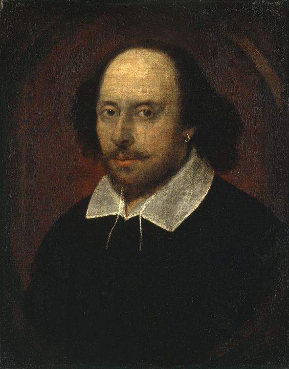

William Shakespeare
1564-1616
The Bard
William Shakespeare (bapt. 26 April 1564 - 23 April 1616) was an English playwright, poet and actor. He is widely regarded as the greatest writer in the English language and the world's pre-eminent dramatist. He is often called England's national poet and the "Bard of Avon" (or simply "the Bard"). His extant works, including collaborations, consist of some 39 plays, 154 sonnets, three long narrative poems, and a few other verses, some of uncertain authorship. His plays have been translated into every major living language and are performed more often than those of any other playwright. Shakespeare remains arguably the most influential writer in the English language, and his works continue to be studied and reinterpreted.
Famous Plays
- Love's Labour's Lost (1594)
- All's Well That Ends Well (1602)
- As You Like It (1599)
- The Merchant of Venice (1596)
- Two Gentlemen of Verona (1594)
- The Merry Wives of Windsor (1600)
- Measure for Measure (1604)
- Antony and Cleopatra (1606)